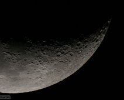
{kind=link}
Crescent Moon on 4/6/2005.
Crescent Moon on 4/6/2005. Taken with the old Canon Digital Rebel XT on the 12-inch Meade LX200.
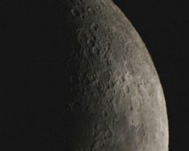
{kind=link}
Crescent Moon on 4/6/2005.
Crescent Moon on 4/6/2005. Taken with Canon Digital Rebel on Meade 12" LX 200. 1/100 sec exposure, ISO 200.
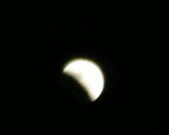
{kind=link}
Eclipse Movie
2008-02-20. Click to view a GIF movie of a lunar eclipse. Stills taken with Canon Digital Rebel XT and kit lens.
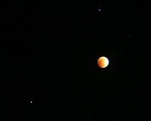
{kind=link}
Total lunar eclipse of 2/21/08 with stars.
Total lunar eclipse of 2/21/08 with stars. Taken with Canon Digital Rebel with kit lens at about 55 mm; ISO 800, 3 second exposure. Such a long exposure would…
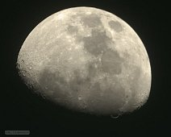
{kind=link}
Gibbous Moon on 5/12/11.
Gibbous Moon on 5/12/11. Taken with Meade DSI on the 12-inch Meade LX200.
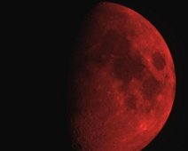
{kind=link}
10/24/11 Gibbous Moon through red filter.
Gibbous Moon shot through 80mm APO with red filter over aperture. 10/24/11.
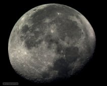
{kind=link}
Gibbous Moon on 3/10/12.
Gibbous Moon on 3/10/12. Taken with the Atik 383L CCD on the Meade Apochromatic refractor. About a 0.03 sec exposure.
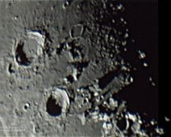
{kind=link}
Detail enhanced close-up.
5/16/17. A heavily cratered area of the moon near the terminator. Taken with a Logitech webcam and processed using wavelet transforms.
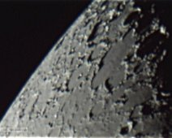
{kind=link}
Moon close-up 5/16/13.
Moon close-up 5/16/13. Extracted from a Logitech web cam video and processed with wavelet sharpening. The web cam is modified to work at the cassegrain focus…
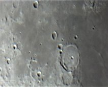
{kind=link}
Moon close-up 5/16/13.
Close up of Moon extracted from logitech webcam video with some wavelet sharpening. Webcam placed at cassegrain focus of the 11-inch or the 12-inch.
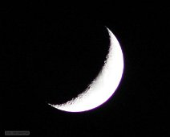
{kind=link}
Waxing Crescent on 5/29/17.
Waxing Crescent on 5/29/17. Taken with the EF75-300 zoom lens (at f/5.6, 300 mm) on the Canon T5i with a 1/200 sec exposure. This lens produces some chromatic…
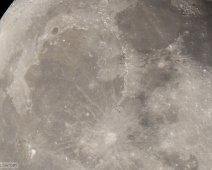
{kind=link}
Gibbous Moon on 9/5/17.
Gibbous Moon on 9/5/17. Lunar North is roughly up and West roughly left. Featuring the rayed crater Copernicus (below center), Mare Imbrium (center left),…
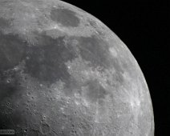
{kind=link}
Moon close-up 9/28/17.
Moon close-up 9/28/17. Mare Tranquillitatus is the dark region closest to center. The bright rayed crater Proclus is above it. Taken with Canon T5i, 1/800…
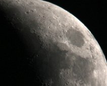
{kind=link}
Waxing crescent on 5/20/18.
Waxing crescent on 5/20/18. Mare Crisium is the dark oval region to the top right. Lunar N is up and E to left. Taken with Canon T5i in 1920x1080 (S2) format…
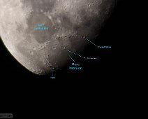
{kind=link}
Gibbous Moon on 5/23/18 with labels.
Gibbous Moon on 5/23/18 with labels. Lunar north is down and East left (fully inverted). 1/15-sec exposure at ISO 200 with Canon T5i.
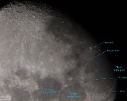
{kind=link}
Gibbous Moon on 5/24/18 with labels.
Gibbous Moon on 5/24/18 with labels. 1/400 sec exposure with ISO 3200 using the Canon T5i on the 11-inch (or 12-inch) telescope.
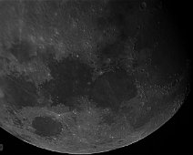
{kind=link}
Gibbous Moon on 5/24/18 from video.
Gibbous Moon on 5/24/18. Mare Tranquillitatus is center and Mare Serenitatus is to its right. A high-contrast image created from a 60 fps Canon T5i video taken…
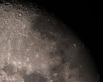
{kind=link}
GIbbous Moon on 5/24/18 from video #2.
GIbbous Moon on 5/24/18 from video #2. Similar to previous picture but showing more of the lunar highlands. Tycho is prominant rayed crater at the top left.
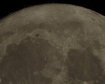
{kind=link}
Gibbous Moon on 10/23/18 from video.
Gibbous Moon on 10/23/18 from video. Mare Imbrium is the large dark region left of center with the dark walled plane Plato just above it. Frames were grabbed…
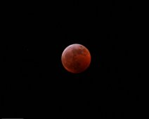
{kind=link}
Total Lunar Eclipse of 1/20/2019.
Total Lunar Eclipse of 1/20/2019. This is during totality. A 1.6 sec exposure with the Canon T5i DSLR on a tripod. The 75-300 mm lens was used at approximately…
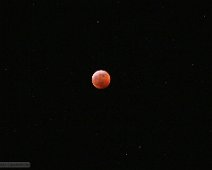
{kind=link}
Total lunar eclipse of 1/20/2019 with stars.
Total lunar eclipse of 1/20/2019. Wide field of view shows stars near the "full" moon in this 2.5 second exposure with the Canon T5i rebel and a 75-300mm zoom…
Lunar Eclipse Movie
(Click to play!) A video combination of multiple stills from the 2019 lunar eclipse, starting with a bright full moon, and ending with the eclipse near…
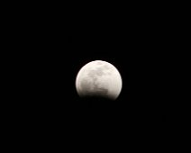
{kind=link}
1/20/19 Lunar eclipse - partial phase.
1/20/19 Lunar eclipse during its partial phase. The umbra part of the Earth's shadow is covering the Moon.
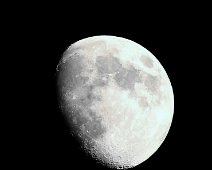
{kind=link}
Gibbous Moon on 5/14/19.
The gibbous Moon on 5/14/19. Taken with the Canon T5i on the 80mm Meade apo, 1/1600 sec, ISO 1600. Cropped down about 1/4 of original size. Sinus Iridum is at…
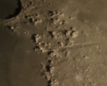
{kind=link}
Vallis Alpes
Vallis Alpes is 180 km long. 1/30 sec exposure on 9/25/20 using the Canon T5i with eyepiece projection.
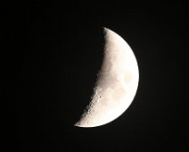
{kind=link}
Almost 1st quarter Moon.
Almost 1st quarter Moon on 12/20/20. 1/60 sec exposure with the Canon T5i on the 80 mm Apo. (Cropped down to ~1/5 original size.) 1.85 "/pix scale
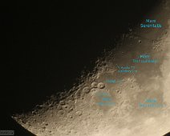
{kind=link}
Nearly 1st quarter Moon close-up with labels.
Nearly 1st quarter Moon close-up with labels. 1/10 second exposure with the Canon T5i on either the Celestron 11-inch or Meade 12-inch.